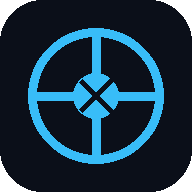

قاعدة البيانات السريرية الموسعة والمتقدمة
أساسيات التحفيز الكهربائي: يدمج جهاز AST-2012A بين تيارات TENS (التحفيز الكهربائي للأعصاب عبر الجلد) لتعديل بوابات الألم (Gate Control Theory) وتيارات EMS (التحفيز الكهربائي للعضلات) لإعادة التثقيف العضلي الحركي.
| المعيار | القيمة المحددة |
|---|---|
| الموديل والتصنيف | AST-2012A - Type BF Applied Part |
| عدد الأنماط والأنشطة | 25 نمطاً علاجياً (TENS / EMS) |
| مستويات الشدة | 50 مستواً متدرجاً (0 - 52V) |
| شكل الموجة | ثنائية الطور متماثلة ونبضية (Symmetrical Biphasic) |
| عرض النبضة (Pulse Width) | 120 ميكروثانية (120 µs) |
| تردد النبضات (Pulse Frequency) | 77.3 هرتز (77.3 Hz) |
| مؤقت الجلسة (Timer) | من 5 إلى 60 دقيقة (الافتراضي 30 دقيقة) |
| الأبعاد والوزن | 147.6 × 75.7 × 22 مم | الوزن: 115 جرام |
| # | النوع | اسم النمط | الوصف والتأثير الطبي |
|---|---|---|---|
| 1 | TENS | Acupuncture Pushing | تعزيز الدورة الدموية وإزالة الانسداد وتسكين الألم. |
| 2 | TENS | Acupuncture | تخفيف الروماتيزم والآلام الحادة والمزمنة. |
| 3 | TENS | Acupuncture Kneading | العجن بالإبر الصينية لإخفاء التوتر وتسكين الألم. |
| 4 | TENS | Acupuncture Tapping | النقر الإبري لتنشيط الدورة الدموية الدقيقة. |
| 5 | EMS | Scraping | الكشط لتنشيط المسارات العصبية والعضلية. |
| 6 | TENS | Squeezing | الضغط والعصر لتسكين الألم العضلي. |
| 7 | EMS | Massage | التدليك العام لتعزيز التروية الدموية. |
| 8 | EMS | Pushing Massage | تدليك الدفع لاستعادة القوة وتخفيف الإرهاق. |
| 9 | EMS | Pushing Squeezing | الدفع والعصر لزيادة المقاومة وتخفيف التعب. |
| 10 | TENS | Acupuncture Squeezing | العصر الإبري لتسكين آلام الأنسجة العميقة. |
| 11 | TENS | Acupuncture Hammering | الطرق بالإبر لتسكين آلام القشعريرة والروماتيزم. |
| 12 | TENS | Kneading | العجن لتخفيف الإرهاق العضلي الشديد. |
| 13 | TENS | Thumping | الضرب الخفيف لتنشيط الدورة الدموية المحلية. |
| 14 | EMS | Scraping Pressing | الكشط والضغط لفك التشنجات العضلية. |
| 15 | TENS | Cupping | محاكاة الحجامة لطرد البرد والتورم. |
| 16 | EMS | Body Shaping | نحت وتقوية العضلات وإعادة التثقيف الحركي. |
| 17 | TENS | Hammering | الطرق لإرخاء العضلات المتشنجة. |
| 18 | TENS | Massage Tapping | النقر والتدليك السريع للتسكين. |
| 19 | EMS | Pushing | الدفع لتقوية الألياف العضلية وتسهيل الحركة. |
| 20 | TENS | Rolling Pounding | الدحرجة الطرقية لتسكين آلام المفاصل. |
| 21 | TENS | Squeezing II | تنشيط الدورة الدموية وتعزيز التدفق. |
| 22 | EMS | Stroke | تحفيز السكتة/الضربة لإرخاء العضلات. |
| 23 | TENS | Acupuncture Therapy | تدليك العلاج بالإبر الصينية الشامل. |
| 24 | TENS | Shiatsu | الشياتسو لتسليك المسارات وتسكين الأعصاب. |
| 25 | TENS | Rolling Kneading | العجن والدحرجة لإرخاء الأربطة والعضلات. |
تحديد الشدة (Intensity): يجب أن تُرفع الشدة تدريجياً. في حالات TENS يجب الشعور بنبض قوي ومريح دون إحداث انقباض عضلي. في حالات EMS يجب الوصول إلى عتبة الانقباض العضلي (Motor Threshold) لرؤية استجابة حركية واضحة.
قاعدة الأقطاب: القطب السالب (الكاثود) يكون عادة أكثر تحفيزاً وإثارة للأنسجة، لذلك يوضع غالباً فوق النقطة الحركية للعضلة (Motor Point) للحصول على أفضل انقباض، بينما يوضع القطب الموجب (الأنود) بالقرب من منشأ العصب أو العضلة.
تنفيذي الأمان الذاتي: عند تغيير النمط أثناء الجلسة، تعود الشدة تلقائياً في القنوات إلى المستوى صفر لحماية المريض من الصدمات الفجائية.
| المشكلة | السبب المحتمل | الإجراء العلاجي |
|---|---|---|
| الجهاز لا يعمل | البطارية فارغة تماماً | وصل الشاحن المرفق حتى يكتمل الشحن. |
| انقطاع التحفيز مفاجأة | انتهاء المؤقت أو انفصال السلك | تحقق من توصيل القابس بمدخل القناة. |
| عدم الشعور بالتحفيز | الوسائد متسخة أو الفيلم عليها | تأكد من نزع الفيلم الشفاف ونظافة الجلد. |
| احمرار الجلد تحت الوسائد | استخدام متكرر في نفس المكان | غير موضع الأقطاب ونظف الجلد جيداً بماء جاف. |
d = [3.5 / E1] √P لحماية الجهاز من التداخلات اللاسلكية.موانع الاستعمال المطلقة (Absolute Contraindications):
- المرضى المزودين بمنظمات ضربات القلب (Pacemakers) أو أجهزة مقوم نظم القلب ومزيل الرجفان المزروع (ICD).
- الحمل (يمنع الاستخدام على البطن، الحوض، وأسفل الظهر).
- الأورام الخبيثة النشطة في منطقة العلاج.
- التخثر الوريدي العميق (DVT) لتجنب تحرير الخثرة.
مناطق يمنع وضع الأقطاب عليها:
- الجيوب السباتية في الرقبة الأمامية (Carotid Sinus) لتجنب هبوط الضغط الحاد والإغماء.
- مروراً عبر الصدر (Trans-thoracic) لتجنب اضطراب نظم القلب.
- على العينين أو الأغشية المخاطية.
الإصدار 2.0 من محرك البحث يعتمد على:
1. تسوية النصوص (Text Normalization): يعالج الفروق في كتابة الهمزات (أ، إ، ا) والتاء المربوطة والهاء والياء والألف المقصورة. (مثال: كتابة "اصابع" أو "أصابع" ستعطي نفس النتيجة).
2. البحث العكسي المتقاطع: يقوم بتقسيم جملة البحث إلى كلمات والبحث عن تطابقها في قاعدة البيانات الضخمة لمنع ظهور رسالة "الحالة غير موجودة" بشكل عشوائي.
3. العمق السريري والدليل الشامل: أصبح شريط البحث يستوعب كلاً من الحالات العلاجية، الأنماط الـ 25، والمواصفات الفنية للجهاز بالكامل.